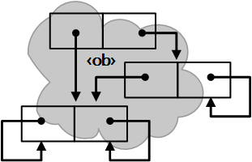

n170601
Miser
nfoNote
Welcome to
the Miser Project
oMiser Conception
0.1.1 2017-08-29 17:11 -0700
|
|
n170601
Miser
nfoNote |
0.1.1 2017-08-29 17:11 -0700 |
- Latest professional-appearance version: Welcome to the Miser Project is maintained at
<http://miser-theory.info/notes/2017/06/n170601b1.htm>. Publication is at
<http://miser-theory.info/default.htm>
Latest version (document engineering): available on the Internet at
<http://miser-theory.info/notes/2017/06/n170601b.htm>
- This version: oMiser Conception (document engineering)
<http://miser-theory.info/notes/2017/06/n170601d.htm>.
Consult that page for the latest status and for the most-recent electronic copies of the material.
Professional appearance: <http://miser-theory.info/notes/2017/06/n170601d1.htm>.- Previous version: Provisional Entrance (document engineering)
<http://miser-theory.info/notes/2017/06/n170601c.htm>.
|
Now Playing:
|
 The Miser Project |
Demonstrating Flexibility Universality Extensibility Manifestation Instrumentality |
|
|
You are navigating
The Miser Project. This work is licensed under a Creative Commons Attribution 2.5 License. |
0.1.1 2017-08-29 17:11 -0700 |
- Hamilton, Dennis E.
- Welcome to the Miser Project: oMiser Conception. Miser Project nfoNote page n170601d 0.1.1, July 8, 2017. Accessed at <http://miser-theory.info/notes/2017/06/n170601d.htm>.

|
|
created 2017-07-07-14:22 -0700 |